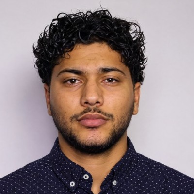

Formation actuelle
Master of Science Informatique & DevOps — ETNA, 2026–2028
RECHERCHE D'ALTERNANCE DEVOPS · SEPTEMBRE 2026
Étudiant en Master Informatique & DevOps à l'ETNA, je souhaite contribuer à l'automatisation, au déploiement et à la fiabilité des infrastructures informatiques.
MON PROFIL

Étudiant en Master Informatique & DevOps
01 / À PROPOS
Étudiant en Master Informatique & DevOps à l'ETNA, je recherche une alternance DevOps à partir de septembre 2026. Mon parcours en cybersécurité, informatique et réseaux m'a permis de développer des bases en administration Linux, scripting Python et Bash, réseaux et développement web. Je souhaite approfondir mes compétences en automatisation, intégration continue, déploiement et fiabilité des infrastructures.
Master of Science Informatique & DevOps — ETNA, 2026–2028
Alternance DevOps dès septembre 2026
3 semaines en entreprise / 1 jour à l'école
02 / SAVOIR-FAIRE
Compétences techniques développées durant ma formation et mes projets.
03 / MES RÉALISATIONS
Des réalisations qui illustrent mes compétences en développement, traitement de données et administration système.
PROJET BTS · 2024–2025
Conception d'une application Flask collectant en temps réel les données de 5 capteurs IoT. Les données transitent via MQTT avec Mosquitto, sont stockées dans MariaDB puis visualisées sur un tableau de bord responsive avec Chart.js. L'application a été déployée sur un serveur Linux local.
Voir mon GitHub ↗EXPÉRIENCE PROFESSIONNELLE
Stage chez Arc en Ciel Informatique à Toulouse, de mai à juillet 2024. Déploiement et configuration de plus de 15 postes Windows, résolution d'incidents matériels et réseau, gestion des comptes et droits d'accès sous Windows Server, support utilisateur et maintenance préventive.
DÉVELOPPEMENT WEB
Développement et livraison d'un site web complet en HTML, CSS et PHP en trois semaines, dans le respect du cahier des charges du client pendant mon stage.
04 / FORMATION
2026 — 2028
ETNA · Ivry-sur-Seine (94)
Formation en informatique et DevOps, avec une recherche d'alternance à partir de septembre 2026.
2025 — 2026
Lycée Paul Éluard · Saint-Denis (93)
2023 — 2025
Lycée Simone de Beauvoir · Toulouse
Réalisation d'un projet IoT de collecte et visualisation de données de capteurs.
2022 — 2023
Lycée Ibn Charaf · Tunis
05 / LANGUES & QUALITÉS
06 / CONTACT
Je recherche une alternance DevOps à partir de septembre 2026. N'hésitez pas à me contacter pour échanger sur une opportunité.
Téléphone : +33 7 58 95 18 50